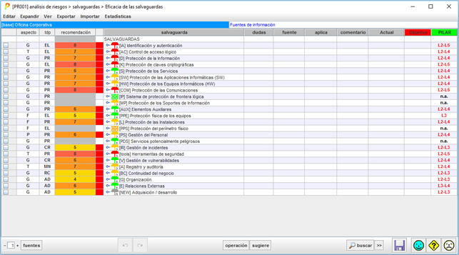
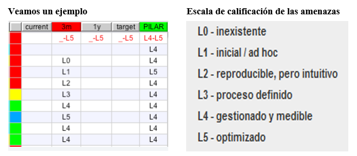
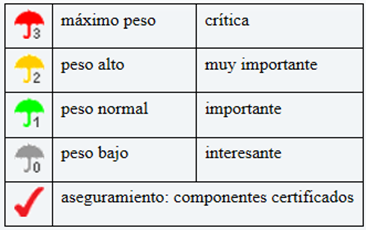

Aspecto que trata la salvaguarda:
— G para Gestión
— T para Técnico
— F para seguridad Física
— P para gestión del Personal
|
— PR – prevención
— DR – disuasión
— EL – eliminación
— IM – minimización del impacto
— CR – corrección
— RC – recuperación
|
— AD – administrativa
— AW – concienciación
— DC – detección
— MN – monitorización
— std – norma
— proc – procedimiento
— cert – certificación o acreditación
|
Es una valoración en el rango [nada .. 10] estimada por PILAR teniendo en cuenta el tipo de activos y su valoración en cada dimensión.
La celda queda gris si PILAR no ve ningún motivo para poner esta salvaguarda; es decir, si PILAR no sabe qué riesgo mitigaría esta salvaguarda.
(o) – significa que PILAR opina que es excesiva (“overkill”)
(u) – significa que PILAR opina que es insuficiente (“underkill”).
- Semáforo (Columna sin título)
El semáforo resume en un color si la madurez de la salvaguarda es suficiente o no.
A fin de calcular el color del semáforo, PILAR usa 2 referencias
VERDE: la madurez objetivo
- clic con el botón derecho en la cabecera de la fase que desea usar como objetivo la cabecera de la columna seleccionada se pinta en VERDE
ROJA: la madurez evaluada
- haga clic con el botón izquierdo en la cabecera de la fase que desea evaluar la cabecera de la fase seleccionada se pinta en ROJO
Usando la información anterior, PILAR decide un color para la columna Semáforo:
|
AZUL
|
la madurez actual (ROJA) está por encima del objetivo (VERDE)
|
|
VERDE
|
la madurez actual (ROJA) está a la altura del objetivo (VERDE)
|
|
AMARILLO
|
la madurez actual (ROJA) está por debajo del objetivo (VERDE)
|
|
ROJO
|
la madurez actual (ROJA) está muy por debajo del objetivo (VERDE)
|
|
GRIS
|
la salvaguarda no es aplicable
|

La fase roja es [3m].
La fase verde es [PILAR]
El semáforo, en la primera columna se ajusta a la diferente madurez en las fases ROJA y VERDE
Árbol de salvaguardas. A continuación, se expone el Peso Relativo que tiene cada salvaguarda:

Haga clic para marcar / desmarcar la caja. La marca se usa, típicamente, para recordar que hay asuntos pendientes de una respuesta.
La marca “mancha” todo el árbol, desde donde se pone hasta la raíz, para que sea evidente que hay algo pendiente.
Haga clic para asociar fuentes de información a la salvaguarda (la marcada y sus descendientes).
Todas las salvaguardas aplican, salvo que se marquen como “n.a.”.
Haga clic para conmutar entre “Aplica” y “No Aplica” en cualquier casilla de la columna “Aplica”.
Cuando una salvaguarda cambia, esto se propaga a todos los hijos en el árbol.
Cuando algunos hijos son de aplicación y otros no, se pintan puntos suspensivos.
Haga clic para asociar un comentario a la salvaguarda.
Fase que corresponde al estado Actual en que se encontraron las salvaguardas
Fase que corresponde al estado ideal al cual se quiere alcanzar
Fase que corresponde al estado que PILAR recomienda alcanzar